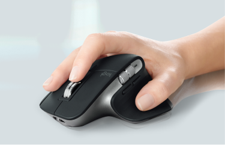
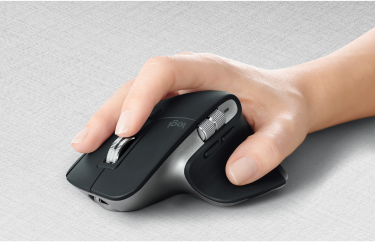
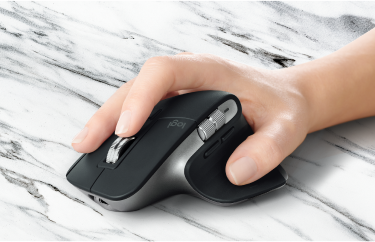

за любым столом
Исследуйте ландшафты своего дома, не отвлекаясь от работы. MX Master 3 достаточно компактная, чтобы сменить рабочее место и перенестись с ноутбуком на кухню.
-
В 5 раз
точнее предшественников
-
4 000
точек на дюйм чувствительность датчика





Благодаря технологии Logitecch Darkfierd, MX Master 3 работает на любой поверхности, даже на стекле.